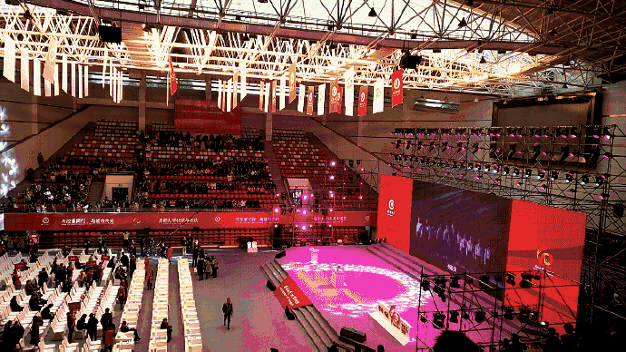

户外活动
周末户外素拓

户外运动的意义
户外运动可以使你体验到与在城市中生活完全不同的感觉，感受大自然，感受团体合作精神，感受自我动手能力，磨练自己的意志，锻炼自己的体力，感受野外清新的空气，嗨可以体验到在野外各种环境，现在户外运动成为人们除了旅游之外最喜爱玩的运动，不需要太奢侈的装备，只要你有信心和激情，就可以背起背包，到自然中去，相信你会喜欢在自然中的感觉。
五四晚会
受邀参加五四晚会

五四青年节
五四青年节源于中国1919年反帝爱国的“五四运动”，五四爱国运动是一次彻底的反对帝国主义和封建主义的爱国运动，也是中国新民主主义革命的开始。1939年，陕甘宁边区西北青年救国联合会规定5月4日为中国青年节。 青年节期间，中国各地都要举行丰富多彩的纪念活动，青年们还要集中进行各种社会志愿和社会实践活动，还有许多地方在青年节期间举行成人仪式。